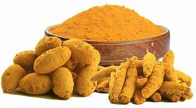

Haldi

7 Amazing Benefits of Haldi Doodh (Golden Turmeric Milk) and How To Make It: Recipe InsideHaldi Doodh is the go-to immunity and healing drink in many Indian families' homes. Heres everything you need to know about the benefits, when to consume and how to make it.Praerna KarthaUpdated: January 20, 2023 18:42 ISTRead Time:5 min
7 Amazing Benefits of Haldi Doodh (Golden Turmeric Milk) and How To Make It: Recipe Inside
Turmeric is enriched with anti-viral, anti-fungal, anti-inflammatory and antiseptic properties.Photo Credit: Praerna KarthaHighlightsHaldi doodh has long been touted as a wonder beverageAn ancient remedy to boost immunity and heal the body from within"Turmeric Latte" has brought the humble haldi doodh into the spotlight
Haldi doodh (or turmeric milk) has long been touted as a wonder beverage with a host of health benefits. The rise in popularity of turmeric latte or golden latte, as some international coffee chains have named it, brings home the fact that it has been a part of the diet and traditions in India for ages. Our grandmothers have long sworn by the humble haldi doodh for every common ailment - from cold and sore throat to muscle pain and recovery from an injury. In fact, many experts even say that it can even give you a clearer complexion.